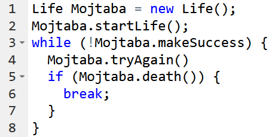

Mojtaba Tefagh – Teaching
Current classes
xxxxx Algorithmic Game Theory
Term: Fall 2021 | Units: 4 | Section: 01 | Students enrolled: TBD | Lectures: TBD | Exam Date/Time: TBD | Prerequisite: Some optimization experience and familiarity with economics.
 |
Frontiers in mechanism design and incentive engineering for cryptoeconomic systems such as decentralized finance. |
This is the alpha version of a course on the ongoing research and open problems in algorithmic game theory. Many advanced topics and cutting-edge issues in the field are discussed, which require mathematical maturity at the level of Ph.D. courses. There is no official textbook for the course.
22811 Foundations of Computer and Programming
Term: Fall 2021 | Units: 4 | Section: 01 | Students enrolled: TBD | Lectures: TBD | Exam Date/Time: TBD | Prerequisite: Calculus I
|  | Computational thinking and programming code, data representation and data types, branching and iteration, recursion and bisection, string manipulation, tuples and lists, arrays and dictionaries, variables and immutable data structures, functions and methods, classes and objects, abstraction and interfaces, encapsulation and object-oriented programming, inheritance and polymorphism, overloading and overriding, testing and debugging, exceptions and assertions. |
This course covers the fundamentals of computer programming with an emphasis on computational thinking, understanding algorithms, and the basic concepts of programming languages to build a solid background as it is the prerequisite for most of the CS curriculum.
40551 Computational Systems Biology
Term: Fall 2021 | Units: 3 | Section: 01 | Students enrolled: TBD | Lectures: TBD | Exam Date/Time: TBD | Prerequisite: Some programming experience and familiarity with biology.
 |
This course discusses computational systems biology focusing on select topics in fluxomics in a well-balanced mixture of biology, mathematics, and computer science. We start by looking in detail at the mathematical underpinning of constraint-based analysis of genome-scale metabolic network reconstructions and provide a foundation for the analysis of optimization algorithms involved. Subsequently, we provide an overview of various papers and toolboxes from the literature in the remainder of the semester. Students will explore concepts through a research-oriented term project that will require them to define goals, success metrics, and deliverables for a computational challenge in systems biology and implement and evaluate a solution. |
This course was formerly known as 22290 Topics in Mathematical Biology, and was taught 2020-21. Some of the material from that class is expanded and used here.
Previous classes
22659 Applied Linear Algebra
Term: Spring 2021 | Units: 4 | Section: 01 | Students enrolled: 40 | Lectures: Sun, Tue 8:00–10:00am | Exam Date/Time: 7/4/21 9:00am | Prerequisite: Linear Algebra I
This course is originally developed by Stephen P. Boyd. The course materials are the same as ENGR108 at Stanford. Specifically, the textbook and lecture slides can be found here.
22255 Linear Algebra I
Term: Spring 2021 | Units: 4 | Section: 01 | Students enrolled: 40 | Lectures: Sat, Mon 8:00–10:00am | Exam Date/Time: 6/23/21 9:00am | Prerequisite: Calculus II
 |
Vector space, linear independence, dimension, duality, linear mappings, matrices, nonsingular matrices, kernel, determinant, trace, spectral theory, eigenvalues, eigenvectors, eigendecomposition, conjugacy, Cayley-Hamilton theorem, inner product space, orthonormal basis, euclidean structure, self-adjoint mappings, Hermitian matrices, unitary matrices, orthogonal matrices, diagonalizable matrices, semi-definite matrices, matrix inequalities, convexity, normed linear spaces, positive matrices, systems of linear equations, matrix decomposition, the Jordan canonical form. |
This course covers the fundamentals of linear algebra with emphasis on the concepts and analytical aspects to build a solid background as it is the prerequisite for most of the Math curriculum.
22290 Topics in Mathematical Biology
Term: Fall 2020 | Units: 4 | Section: 01 | Students enrolled: 30 | Lectures: Sat, Mon 3:00–5:00pm | Exam Date/Time: 1/18/21 9:00am | Prerequisite: Convex Optimization
The textbook is Optimization Methods in Metabolic Networks. Applications of convex optimization in metabolic network analysis can serve as an auxiliary text. Moreover, we will use the constraint-based modeling lectures from a course on metabolic modeling taught by Scott Hinton.
22494 Convex Optimization
Term: Spring 2020 | Units: 3 | Section: 01 | Students enrolled: 50 | Lectures: Sun, Tue 9:00–10:30am at Math 217 | Exam Date/Time: 6/28/20 9:00am | Prerequisite: Linear Algebra I
 |
Convex sets, functions, and optimization problems. The basics of convex analysis and theory of convex programming: optimality conditions, duality theory, theorems of alternative, and applications. Least-squares, linear and quadratic programs, semidefinite programming, and geometric programming. Numerical algorithms for smooth and equality constrained problems; interior-point methods for inequality constrained problems. Applications to systems biology, computational geometry, statistics, machine learning, and electrical engineering. |
The course materials are the same as EE364a (Stanford) and EE236b (UCLA). Specifically, the textbook and lecture slides can be found here.